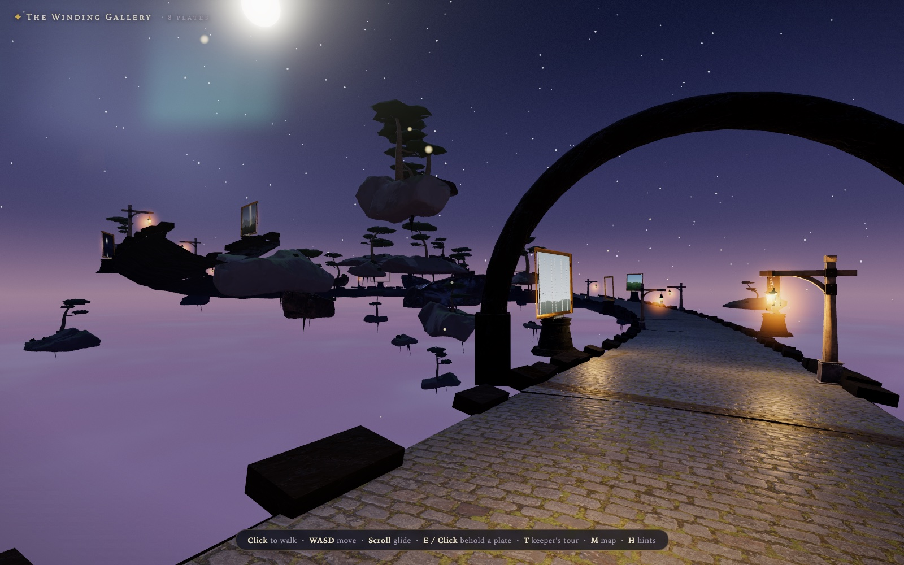
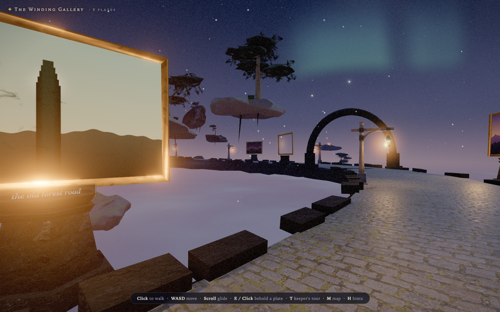
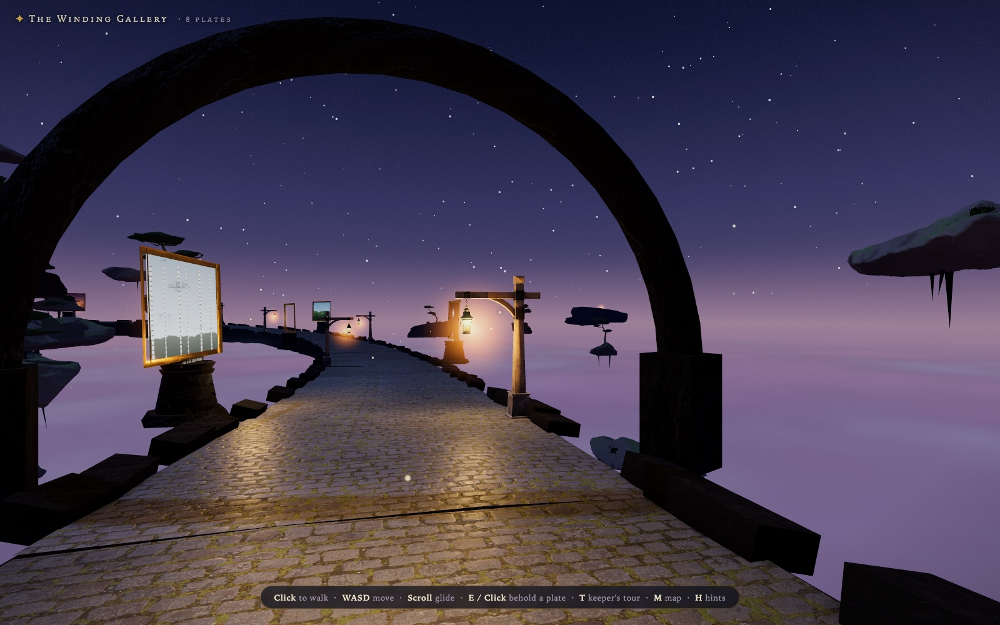
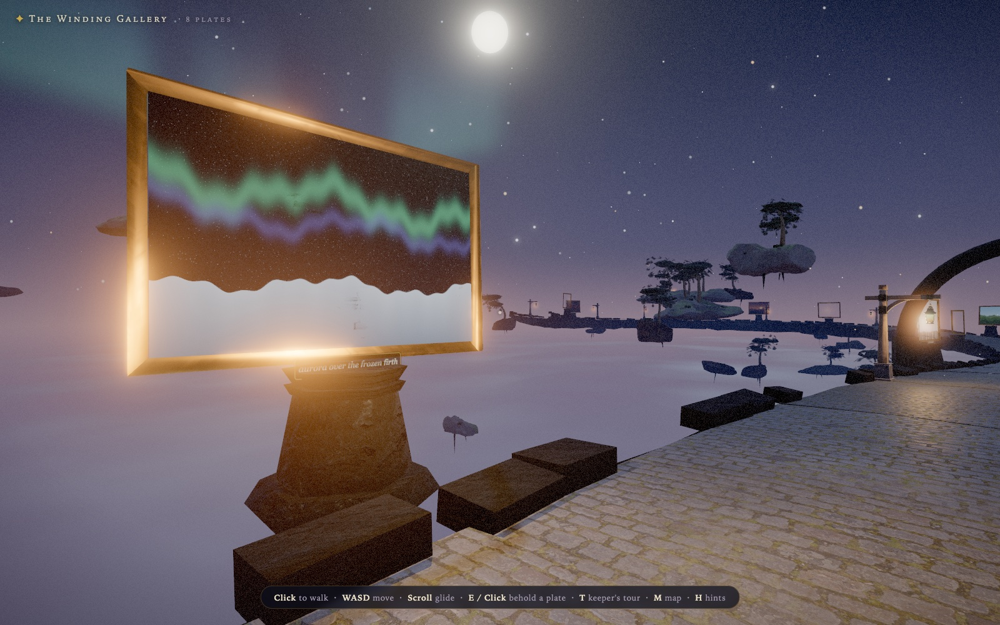
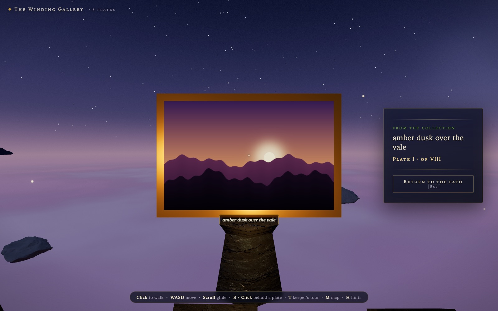
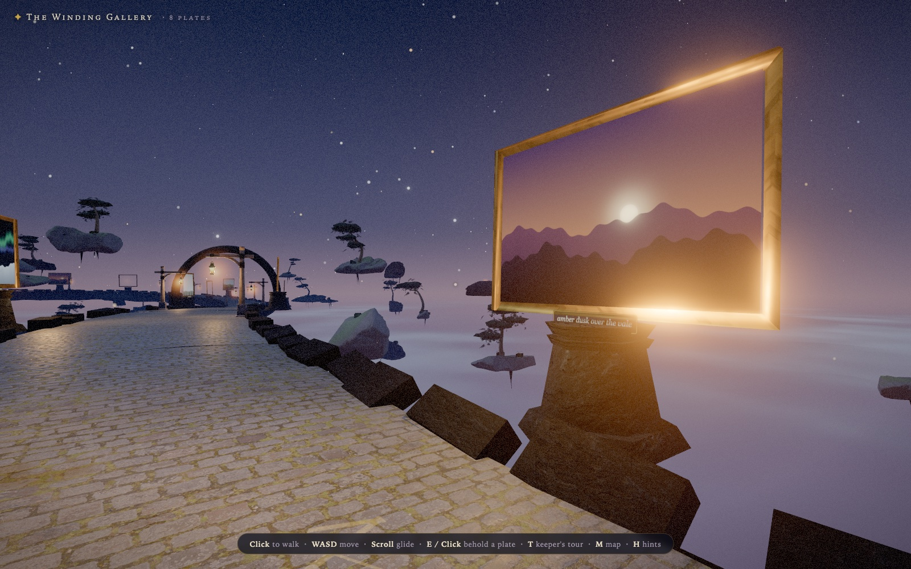
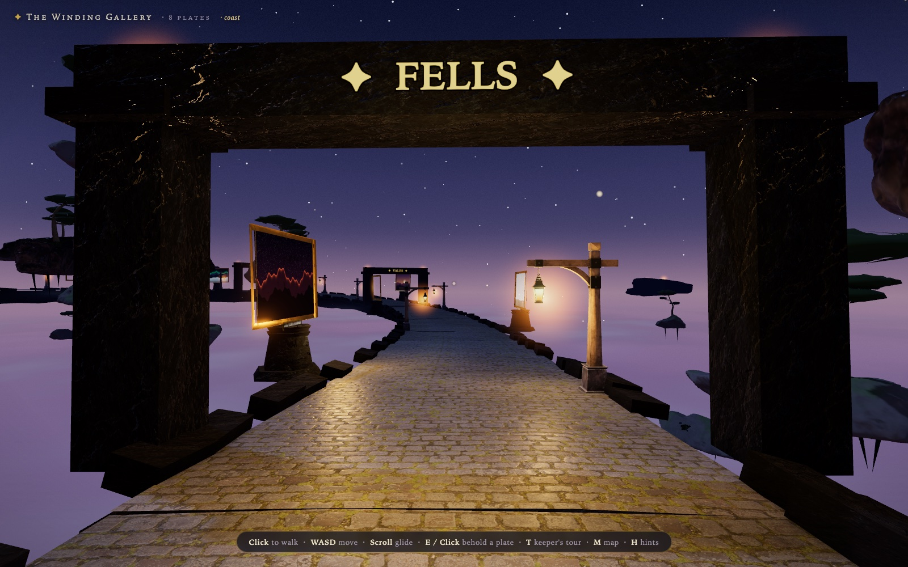
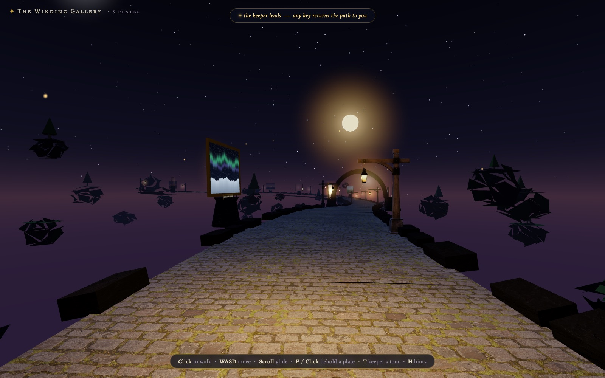
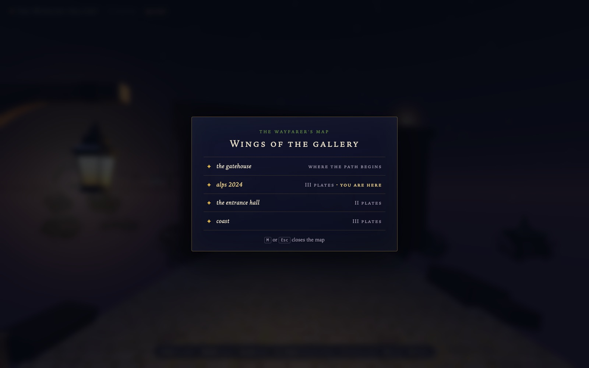
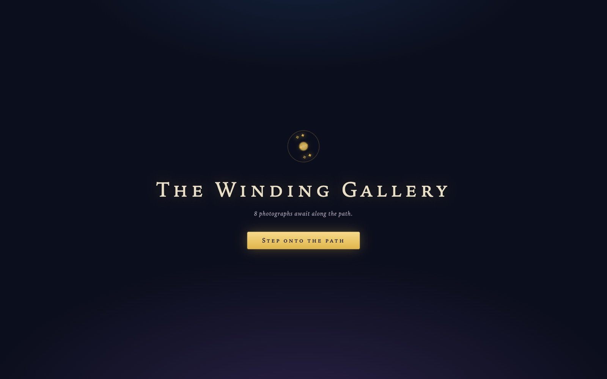

Your photographs, hung along an endless winding sky‑path.

What is this?
Point it at any directory of photos — one command, no build step — and walk a moonlit causeway adrift among floating islands. Every photograph becomes a gold-framed plate on its own stone plinth, lit by lanterns and fireflies, with a brass plaque bearing its name.
The causeway is conjured ahead of you and dissolved behind you, winding and gently climbing forever. When the collection runs out, it simply begins again.
Landscape or portrait, each image is framed to its true aspect, numbered in Roman numerals, and hung under its own soft glow — as is proper for a wizard's collection.
Look at a plate and press E — the view flies in and a parchment panel names it. Press Esc and drift back to the path exactly where you left it.
Press T and a glowing wisp leads a self-playing exhibition, plate to plate, forever. Pair ?auto&tour for a kiosk or TV slideshow.
Subfolders become wings of the gallery — each hangs together on the path, announced by a stone waygate carved with its name in gold.
Press M: every wing listed with its plate count and a you are here mark. Choose one and the night fades — you arrive walking through its gate.
From the collection









Quick start
# any folder of jpg / png / webp / gif / avif — scanned recursively npm i -g the-winding-gallery winding-gallery ~/Pictures/landscapes
# Node 24 LTS recommended git clone https://github.com/acaylor/the-winding-gallery.git cd the-winding-gallery pnpm install pnpm run samples # conjure 8 sample plates pnpm start -- ~/Pictures/landscapes
Then open localhost:4173 and step onto the path.
Walking the path
| Click | take hold of the view |
| WASD + mouse | walk and look — Shift to hurry |
| Scroll | glide along the path, hands-free |
| E / Click a plate | behold it up close, name and number revealed |
| T | the keeper's tour — a wisp leads, any key hands the path back |
| M | the wayfarer's map — step to any wing of the gallery |
| Esc | return to the path |
| H | toggle the hints |
Under the moonlight
No build step, one dependency. A tiny zero-dependency Node server scans your photo directory and serves the app; Three.js is served straight from node_modules.
A path that cannot knot. The causeway is a heading integrated over gentle overlapping sine curvatures — tested to wander and climb forever without ever turning back on itself.
An infinite walk stays lean. Segments are built ahead and dissolved behind; photos decode off-thread, downscale to 2048 px, and are reference-counted.
Real stone and real lanterns. CC0 cobblestone, rock and bark from ambientCG; the lantern is the Khronos glTF sample model, slimmed from 9.6 MB to 271 KB.
Every bundled asset is CC0 — catalogued in
ASSETS.md.
Tested with node --test on every push.